约 1912 个字 13 张图片 预计阅读时间 10 分钟
Chap 11 | Transactions
章节启示录
摆烂了……
1.Transaction Concept¶
事务是程序执行的单元，用于访问并可能更新各种数据项。
A transaction is a unit of program execution that accesses and possibly updates various data items.
1.1 ACID Properties¶
- Atomicity（原子性）:事务的所有操作都正确反映在数据库中，或者没有。
- Consistency （一致性）:单独执行事务可保持数据库的一致性。
- Isolation（隔离性）:尽管多个事务可以同时执行，但每个事务必须不知道其他并发执行的事务。中间事务结果必须对其他并发执行的事务隐藏。 也就是说，对于每一对 Ti 和 Tj 事务，在 Ti 看来，要么是 Tj 在 Ti 开始之前完成执行，要么是 Tj 在 Ti 完成之后开始执行。
- Durability（持久性）:事务成功完成后，即使出现系统故障，它对数据库所做的更改也会保留。
- 原子性和持久性是由数据库系统的灾备功能保证
- 隔离性是由数据库的并发控制保证
- 一致性是由用户和系统共同保证
2.Transaction State¶
- Active – 初始状态;事务在执行时保持此状态。
- Partially committed – 在执行最终语句之后。（此时要输出的结果数据可能还在内存缓冲中）
- Failed -- 在发现正常执行无法再继续之后。
-
Aborted – 在事务回滚并将数据库恢复到事务开始前的状态之后。 中止后的两个选项：
-
重新启动事务
只有在没有内部逻辑错误的情况下才能完成
-
终止事务
-
-
Committed – 成功完成后。
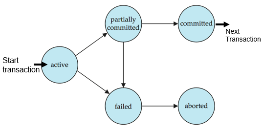
3.Implementation of Atomicity and Durability¶
数据库系统的恢复管理组件实现了对原子性和持久性的支持。
- 影子数据库方案---一种简单但效率低下的方案：名为 db_pointer 的指针始终指向数据库的当前一致副本。
所有更新都是在新创建的数据库副本上进行的。
- 如果中止：只需删除新副本即可。
- 如果提交：
- 将新副本的所有页面内存到磁盘（在unix中，flush命令）。
- db_pointer更改为指向新副本---成为当前副本，同时删除旧副本。
4.Concurrent Executions¶
4.1 Schedules¶
- 调度：指示并发事务指令执行的时间顺序的序列
- 一组事务的时间表必须包含事务的所有指令
- 必须保留指令在每个事务中的显示顺序。
-
e.g:
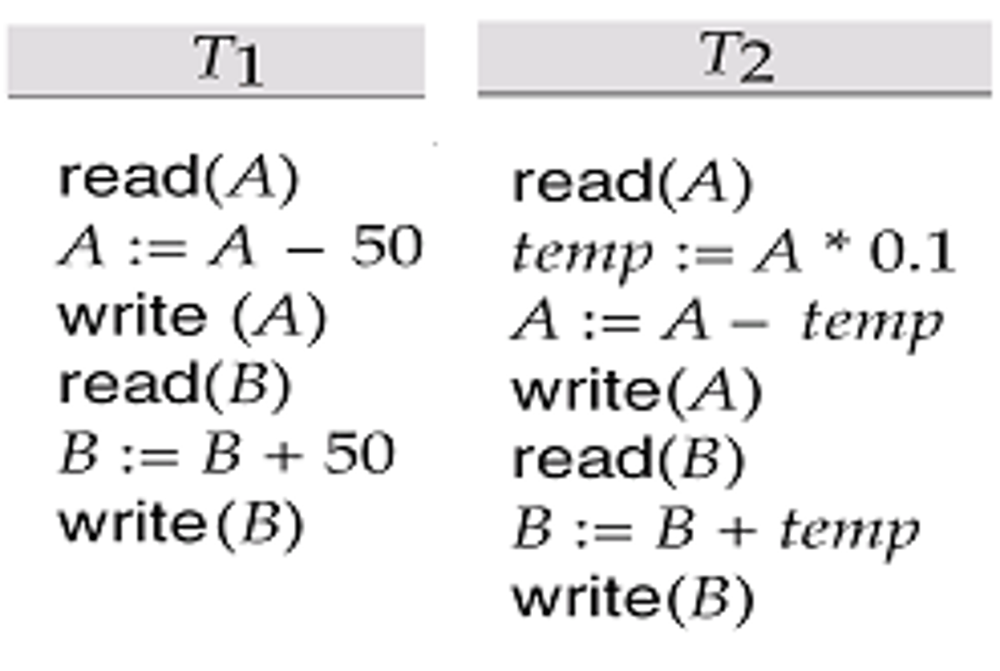
一种调度的例子：串行调度
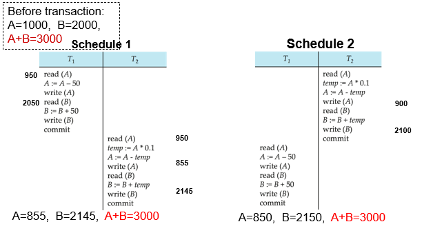
- Both schedule1 and schedule2 are serial（串行的）
- N个并行事务有n!种可选择的串行调度 (如
- 串行的调度必能保持一致性， 但低效。
一种调度的例子：并行调度
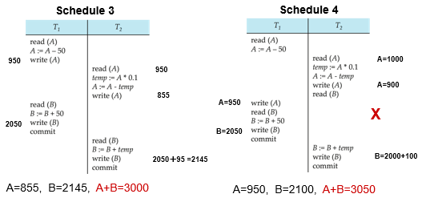
- In both Schedule 1, 2, and 3, the sum A + B is preserved.--- consistency
- But Schedule 4 does not preserve the value of the the sum A + B. --- not consistent. --- a bad schedule!
5.Serializability¶
基本假设 – 每个事务都保留数据库一致性。
因此，一组事务的串行执行可以保持数据库的一致性。
如果（可能是并发）计划等同于串行计划，则该计划是可序列化的。不同形式的调度等价性产生了以下概念：
- Conflict serializability 冲突序列化
- View serializability 视图序列化
5.1 Conflict serializability¶
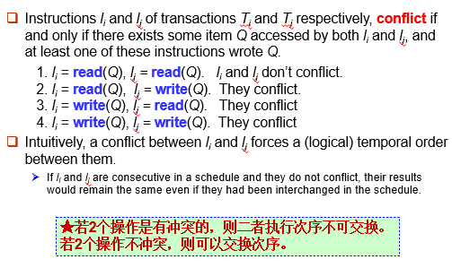
如果可以通过一系列非冲突指令的交换将调度 \(S\) 转换为调度 \(S^{\prime}\)，则我们说 \(S\) 和 \(S^{\prime}\) 是冲突等价的。
我们说，如果调度 \(S\) 与串行调度冲突等价，则它是conflict serializable (可序列化的冲突)。
-
例子1：
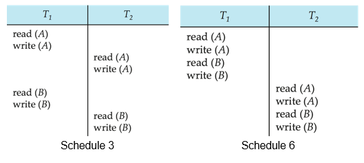Schedule 3 可以通过一系列不冲突指令的交换转换为Schedule 6，即 先 T1 后 T2 的串行调度。因此，Schedule 3 是可序列化的冲突(conflict serializable)。
-
例子2： 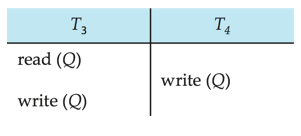
We are unable to swap instructions in the above schedule to obtain either the serial schedule < T3, T4 >, or the serial schedule < T4, T3 >.
因为写的交换会引起冲突。
5.2 View Serializability¶
设 \(S\) 和 \(S^{\prime}\) 是具有同一组事务的两个调度。如果满足以下三个条件，则 \(S\) 和 \(S^{\prime}\) 是视图等效的，对于每个数据项 Q:
-
首读：如果在调度 \(S\) 中，事务 \(T_i\) 读取 \(Q\) 的初始值，则在调度 \(S^{\prime}\) 中，事务 \(T_i\) 也必须读取 Q 的初始值。
-
写读：如果在表 \(S\) 事务 \(T_i\) 中执行 read（\(Q\)），并且该值是由事务 \(T_j\)（如果有）生成的，则在表 \(S^{\prime}\) 中，事务 \(T_i\) 也必须读取由事务 \(T_j\) 的相同 write（\(Q\)） 操作产生的 \(Q\) 值。
-
末写：如果在调度 \(S\) 中最后一步执行 write（\(Q\)） 调度 \(S^{\prime}\) 中最后一步也需要执行 write（\(Q\)） 操作。
如果调度 \(S\) 的视图等效于串行计划，则调度 \(S\) 是 view serializable (视图可序列化)。
-
例子1：
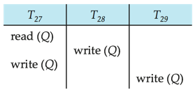is a schedule which is view-serializable but not conflict serializable
-
例子2：
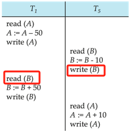存在“写读”，改为串行后变成“读写”，所以不行。
is not conflict equivalent or view equivalent to it.
但它是可串行化的。
6.Recoverability¶
6.1 Recoverable Schedules¶
可恢复调度 — 如果事务 Tj 读取事务 Ti 之前写入的数据项，则 Ti 的提交操作出现在 Tj 的提交操作之前。
e.g:
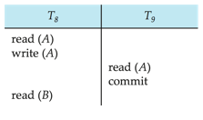
如果 T8 后续回滚, 但 T9 已经基于脏数据做了后续操作，而且已经提交了，不可恢复。
6.2 Cascading Rollbacks¶
级联回滚 – 单个事务失败会导致一系列事务回滚。请考虑以下计划，其中尚未提交任何事务（因此计划是可恢复的）:
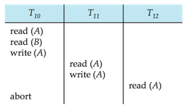
如果 T10 失败，则还必须回滚 T11 和 T12。 可能导致大量工作的撤消,因此我们更希望用非级联的恢复，否则开销太大。
6.3 Cascadeless Schedules¶
无级联调度 — 不会发生级联回滚;对于每对事务 Ti 和 Tj，若 Tj 读取 Ti 之前写入的数据项，Ti 的提交操作需要出现在 Tj 的读取操作之前。
每个 Cascadeless Schedules 也是可恢复的。
最好将计划限制为 Cascadeless Schedules。
7.Testing for Serializability¶
考虑一组事务 T1、T2、...、Tn 的一些调度
- Precedence graph (优先级图) — 一个有向图，其中顶点是事务。
- 如果两个事务发生冲突，我们从 Ti 到 Tj 画一条弧线，并且 Ti 访问了之前发生冲突的数据项。
- 我们可以通过访问的项目来标记弧线。
e.g:
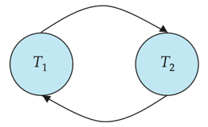
-
当且仅当调度优先级图是非循环的时，调度才是conflict serializable （冲突可序列化的）。
-
存在Cycle-detection（周期检测算法），其顺序为 \(n^2\) 时间，其中 \(n\) 是图中的顶点数。
（更好的算法采用 \(n + e\) 的顺序，其中 \(e\) 是边的数量。
-
如果优先级图是非循环的，则可以通过图的拓扑排序来获得可序列化顺序。
例如:
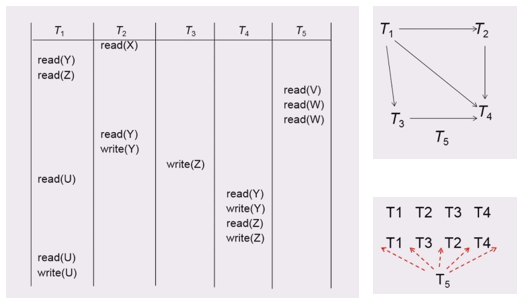
Levels of Consistency in SQL-92¶
- Serializable — 默认
- Repeatable read — 仅读取要读取的已提交记录。
- 重复读取同一记录必须返回相同的值。
- 但是，事务可能无法序列化 - 它可能会找到事务插入的某些记录，但找不到其他记录。
- Read committed — 只能读取已提交的记录。 连续读取记录可能会返回不同（但已提交）的值。
- Read uncommitted — 甚至可以读取未提交的记录。
- Warning：默认情况下，某些数据库系统不确保可序列化计划
复习时的一些补充
- 当且仅当调度优先级图是非循环的时，调度才是conflict serializable （冲突可序列化的）。
- During transaction execution the database may be inconsistent, but when the transaction is committed, the database must be consistent.
- N个并行事务有n!种可选择的串行调度 (如